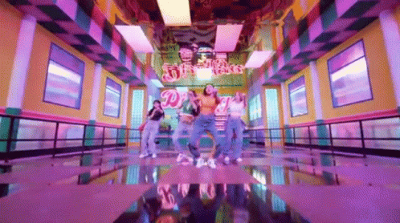
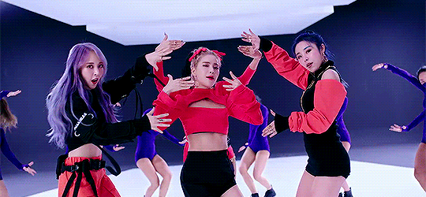

The radish world of Mamamoo
Welcome to the amazing world of Mamamoo! This is for all the moomoo's in the world and for the moomoo's in the making.

Introduction
Welcome my fellow Moomoo! Here you will find all information regarding Mamamoo, this means the members by them self, the goup as a whole, all there songs and extra's/ fun facts. It's a website created to make you a Moomoo and it's also for the Moomoo's that are already fans.
 